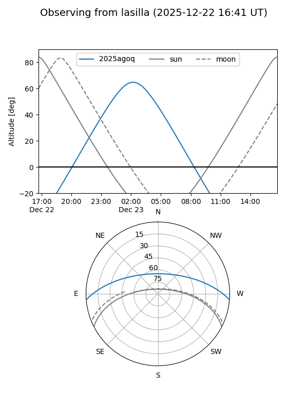
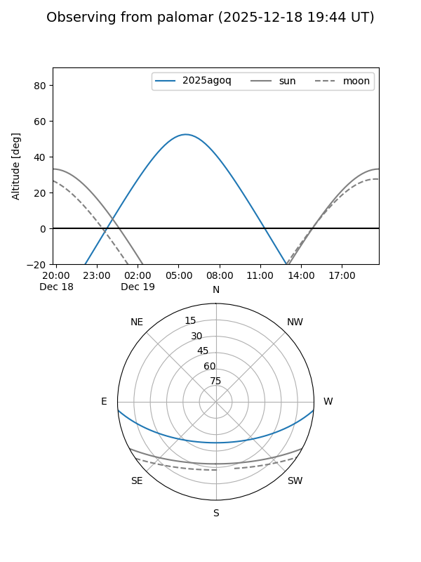
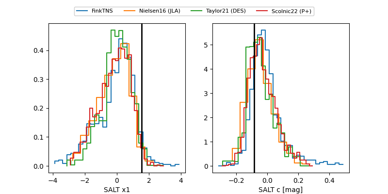

2025agoq
Target 2025agoq at 2025-12-28 05:31
Aliases and brokers:
FINK: fink-portal.org/ZTF25acgopcs
Lasair: lasair-ztf.lsst.ac.uk/objects/ZTF25acgopcs
ALeRCE: alerce.online/object/ZTF25acgopcs
TNS: wis-tns.org/object/2025agoq
YSE: ziggy.ucolick.org/yse/transient_detail/2025agoq
alt names
ZTF25acgopcs (ztf,fink_ztf)
2025agoq (tns,yse)
PS25ioc (panstarrs)
Coordinates:
equatorial (ra, dec) = 53.9053,-4.19496
equatorial (HMS+DMS) = 03:35:37.27,-04:11:41.86
galactic (l, b) = (189.9407,-44.64987)
Flags:
confirmed ia
Photometry:
last ztfg=19.09, ztfr=19.15
6 ztfg, 7 ztfr detections
Lightcurve

Visibility


Additional plots
